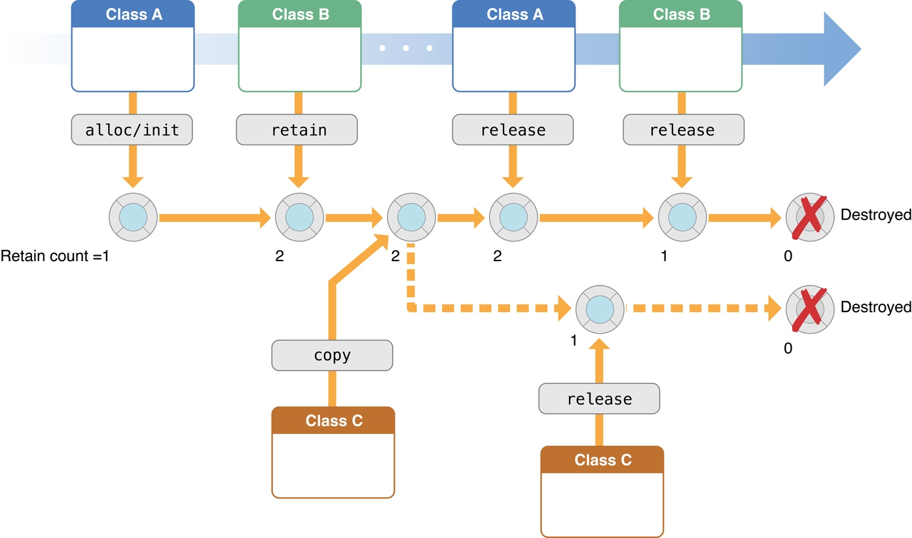

iOS MRC 内存管理的基本原则
搞 iOS 将近一年了，还没怎么写过 iOS 相关的文章，接下来我要开始「干正事」了！
先从内存管理开始。对于一个软件来说，合理的使用内存可以让应用的性能和体验更加优秀。之前搞 Android 时的内存管理就比较简单，基于 JVM 的强大垃圾回收能力，开发者只需要考虑一些常见的内存泄漏问题即可。
转到 iOS 后，就需要了解清楚内存管理的一些知识，提高写代码的姿势水平。
在通读官方文档 Advanced Memory Management Programming Guide 之后，写一写我的理解和总结。
引用计数与 MRC
iOS 内存管理的核心是管理「引用计数 (Reference Counting)」。MRC 的全称是 Mannul Reference Counting。所以，iOS 内存管理，就是手动管理对象的引用计数。

每一个对象都会被若干个对象持有，其他象持有和放弃持有一个对象，实际上是让该对象的引用计数 +1 或者 -1。当一个对象的引用计数减为 0 时，就会被立刻释放。
对一个对象发送 retain 消息，可以让对象的引用计数 +1，对一个对象发送 release 消息，可以让对象的引用计数 -1。当对象的引用计数为 0 时就会被立刻释放。
规则是相当的简单！
但是出来混迟早要还的，规则简单，就意味着在使用时需要各种约定来保证不出问题。
比如最容易想到的一个问题：引用计数的归属问题。既然我可以通过 release 达到引用计数 -1 的目的，是不是就可以随意 release 呢？肯定不是，这样的话可能你正在使用的一个对象，被其他对象调用了 release 然后被释放，这肯定是不行的。
基于引用计数的简单规则下的引用计数归属问题
为了保证对象能正确的被 retain 和 release，需要制定一系列的规则来约束开发者，从而达到正确管理引用计数的目的。
调用方法名以 “alloc”, “new”, “copy”, or “mutableCopy” 开头的方法创建的对象，方法调用者负责后续调用 release 将引用计数 -1
这规则，真 Apple，简单粗暴。
{
Person *aPerson = [[Person alloc] init];
// ...
NSString *name = aPerson.fullName;
// ...
[aPerson release];
}
如上面的例子所示，aPerson 这个对象通过 alloc 方法获得，aPerson 的引用计数为 1，并且负责后续 release。
name 通过函数 fullName 获得，不是以上面提到的关键字开头的，所以不需要负责后续 release。
通过 retain 使对象的引用计数 +1，并负责后续发送 release 消息
{
Person *aPerson = [Person person];
[aPerson retain];
// ...
[aPerson release];
}
归属问题的总原则
总结为一句话就是「谁让引用计数增加 n，谁就负责减少 n」。
一些需要特殊处理的情况
使用 autorelease 发送延迟的 release 操作
上面提到的 release 操作会将对象的引用计数立刻 -1，这样在很多时候，会引起对象立即被释放。
- (NSString *)fullName {
NSString *string = [[[NSString alloc] initWithFormat:@"%@ %@",
self.firstName, self.lastName] autorelease];
return string;
}
上面这个例子中，调用者通过调用 fullName 来获得一个字符串对象，但是根据上面提到的原则，调用者不负责后续调用 release，由 fullName 函数内进行 release，但是 release 之后对象 string 会被立刻释放，调用者就拿不到这个对象了。
要解决这个问题，就要使用 autorelease，顾名思义，自动释放，实际上是和自动释放池配合使用。
在自动释放池内发送了 autorelease 消息的对象，都会在自动释放池结束的时候被发送一次 release 消息，从而达到延迟释放的目的。
@autoreleasepool {
// Code that creates autoreleased objects.
NSString *string = [[[NSString alloc] initWithFormat:@"%@ %@",
self.firstName, self.lastName] autorelease];
}
关于自动释放池，AppKit 和 UIKit 框架为每一个 Runloop 自动包裹了一个自动释放池。因此，通常不必自己创建一个自动释放池。但是，在下面三种情况下，可能会使用自己的自动释放池：
- 如果您正在编写的程序不基于UI框架，例如命令行工具。
- 如果您编写一个循环来创建许多临时对象。您可以在循环中使用 autorelease 池块在下一次迭代之前处理这些对象。在循环中使用自动释放池块有助于减少应用程序的最大内存占用。
- 如果生成一个子线程，一旦线程开始执行，您必须创建自己的自动释放池块;否则，您的应用程序将泄漏对象。
你不持有通过引用返回的对象
在 Cocoa 的一些方法中，指定通过引用返回一个对象（参数是 ClassName ** 或者 id *）。常见的模式是使用 NSError 对象，该对象包含发生错误时有关错误的信息。
当你执行这些方法时，你并没有拥有通过引用返回的对象，所以也不需要调用 release 释放它。用下面这个例子说明一下：
NSString *fileName = <#Get a file name#>;
NSError *error;
NSString *string = [[NSString alloc] initWithContentsOfFile:fileName
encoding:NSUTF8StringEncoding error:&error];
if (string == nil) {
// Deal with error...
}
// ...
[string release];
通过二级指针来获取一个对象，在 Cocoa 中很多地方有这种用法，最经典的就是上面例子中的 initWithContentsOfFile，通过二级指针很方便的取回一个对象。但是这种获得对象的方式并不符合上面提到的引用计数相关的原则，所以这里其实是增加了一种规则。
总结
MRC 的规则相当简单：
对一个对象发送 retain 消息，可以让对象的引用计数 +1，对一个对象发送 release 消息，可以让对象的引用计数 -1。当对象的引用计数为 0 时就会被立刻释放。
简单的规则之上，需要约定很多的规则，来满足和完善复杂的开发场景。所幸现在的 iOS 开发早就切到 ARC（自动引用计数）了。在 ARC 的支持下，我们可以像写 Java 代码那样，不需要去了解和管理引用计数，因为系统已经帮我们做了。
但是，ARC 只是在编译器帮助开发者插入了合适的引用计数管理代码而已，了解清楚引用计数的细节，有助于我们更深层次的理解内存管理，提高个人技术深度与能力。
我这边有翻译了几篇官方文档，有需要的可以看一下，官方文档的质量还是挺高的，对一些事情说的比较直接透彻，只是翻译过来有些句子读着怪怪的，我加了一部分解释。有需求的可以点击阅读原文查看。
转载请注明出处：iOS MRC 内存管理的基本原则 - 专业点
欢迎关注我的公众号

推荐

公众号推荐
欢迎关注我的公众号一起愉快的交流。